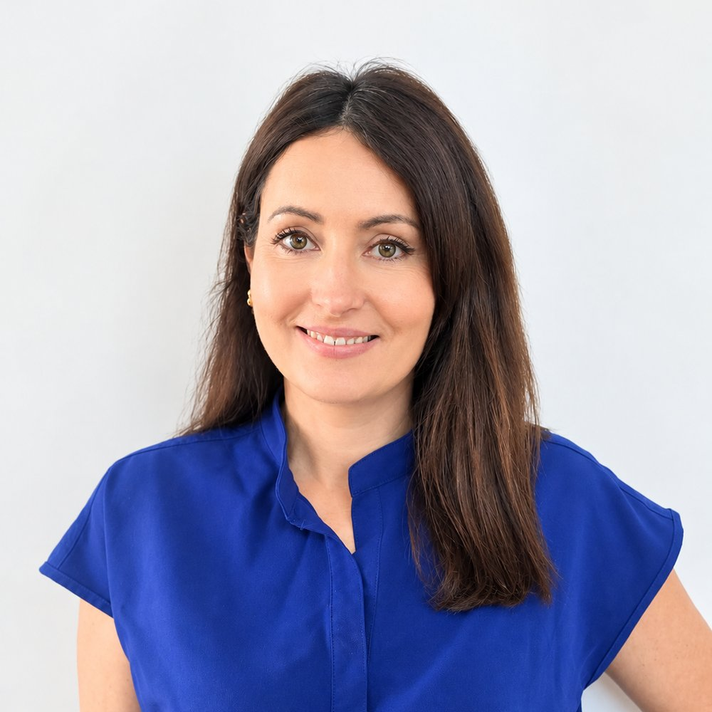
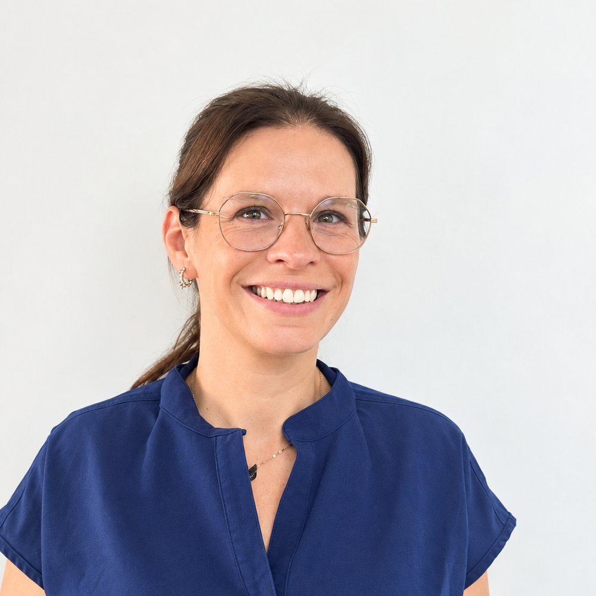

Les praticiennes
Une expertise complète, du soin courant aux traitements les plus spécialisés. Sur Doctolib, les adultes prennent rendez-vous avec le Dr Céline Filipputti ou le Dr Laura Agosto, et les enfants de 3 à 16 ans avec Clotilde Péaut.
À vos côtés
Elles vous accueillent, assistent les praticiens et organisent vos rendez-vous, pour des soins en toute sérénité.


Prenez rendez-vous pour une première consultation et rencontrez notre équipe.